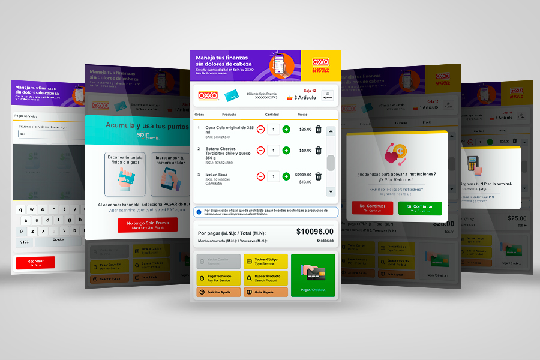

Grupo Ti México · Cliente OXXO
39 pruebas de usabilidad para decidir un solo botón: el nuevo Look & Feel de Autocobro
Lideré el nuevo Look & Feel del sistema de autocobro de OXXO UI Kit, ilustraciones, alertas visuales y de audio, y diseño simultáneo para dos formatos de pantalla (vertical y horizontal). Junto con mi compañera Sofi, validamos con 39 pruebas de usabilidad remotas en Maze cuál de 3 variantes de pantalla comunicaba mejor la siguiente acción al usuario.
